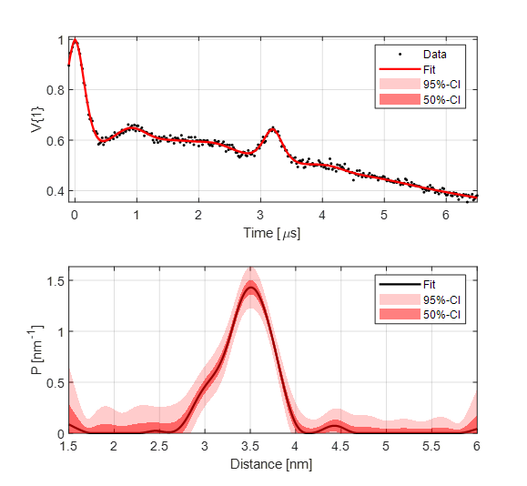
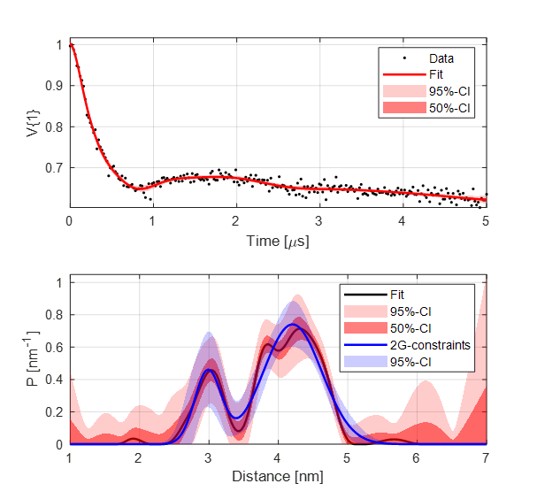
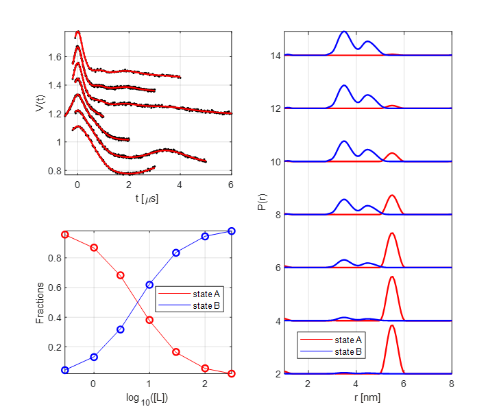

Example scripts¶
Here is a collection of example scripts for the use of DeerLab. You can also find them in the examples subfolder in the DeerLab folder.
Note
Couldn’t find what you were looking for? Add a request for a new example/tutorial and it will considered for the next release.
-
Fitting a 4-pulse DEER signal with a parameter-free distribution
How to fit a simple 4-pulse DEER signal with a parameter-free distribution, a background, and a modulation amplitude.
-

Fitting a 5-pulse DEER signal with a parameter-free distribution
How to fit a 5-pulse DEER signal with a parameter-free distribution, a background, and all multi-pathway parameters.
-
Multi-Gauss fitting of a 4-pulse DEER signal
How to fit a simple 4-pulse DEER signal with background using a multi-Gauss model, i.e automatically optimizing the number of Gaussians in the model.
-
Fitting a mixed distance-domain model
Basic manipulation of parametric models and creating mixed models for fitting distance distributions.
-

Emulating the DeerAnalysis workflow
How to reproduce the type of workflow implemented in DeerAnalysis, using DeerLab functions. This kind of analysis workflow is outdated and not recommended for routine or accurate data analysis.
-
Comparing confidence intervals for regularization results
A simpe example of uncertainty estimation for Tikhonov regularization results. The example covers the use of confidence intervals obtained from curvature matrices and boostrap analysis.
-
Bootstrapped distributions of fit parameters
How to generate probability density functions of values for fit parameters using bootstrapping, showcased for a 5-pulse DEER signal.
-
Uncertainty propagation from parameter fits
How to propagate the uncertainty of the fitted parameters to the models which depend on them.
-
Analyzing the Pake pattern of a dipolar signal
A very basic example for displaying the frequency-domain Pake pattern (spectrum) of a given dipolar signal.
-
Data analysis with the approximate Pake transformation (APT)
How to use the old approximate Pake transformation (APT) technique, which was commonly found in the old DeerAnalysis.
-
Comparison of background treatment approaches
A comparison of different approaches for treating the background in dipolar signals
-
Visualization of the regularization parameter selection on the L-curve
How to construct the L-curve for visualization of the optimal regularization parameter selection in a similar fashion to the old DeerAnalysis.
-

Extracting Gaussian constraints from a parameter-free distribution fit
How to extract Gaussian constraints from a parameter-free fit of a dipolar signal and how to estimate the corresponding uncertainty.
-

Fitting a custom dipolar kernel model with a parameter-free distribution
How to use of SNLLS to fit a custom dipolar kernel model and a parameter-free distribution to a dipolar signal
-

Analyzing pseudo-titration (dose-respononse) curves with parameter-free distributions
How to use separable non-linear least squares (SNLLS) to fit a pseudo-titration curve to multiple DEER datsets, using parameter-free distance distributions.
-
Fitting a custom time-domain model of a 4-pulse DEER signal
Hot to construct a custom time-domain parametric model and fit it using fitparamodel
-
Selecting an optimal parametric model for fitting a dipolar signal
How to optimally select a parametric model for a given dipolar signal from a given set.
-
Global fit of dipolar evolution functions using fitregmodel
How to do global fitting using Tikhonov regularization via fitregmodel.
-
Global model fits with global, local and fixed parameters
How to fit multiple signals to a global model, which may depend on some parameters which need to be globally fitted, some locally and some might be fixed and not fitted.